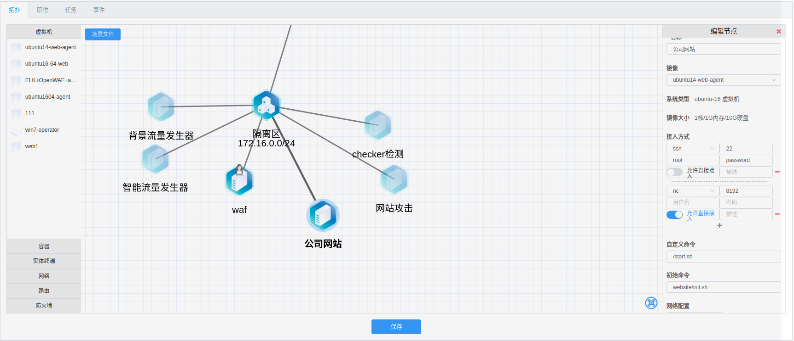

检测类型
- 远程检测
- 新建远程检测步骤
- 本地检测
- 新建本地检测步骤
- 脚本来源说明
- 脚本格式
- python检测脚本格式
- shell检测脚本格式
任务类型
- 试卷型
- CTF型
- 检测型
试卷型
题目类型
- 判断题
- 单选题
- 多选题
- 简答题
步骤
- 点击新增，增加题目
- 填写题目（“内容”为该题目的题干）
- 设置答案
CTF型
步骤
- 先选择靶机
- 填写flag
检测型
检测型类型
- 远程检测
- 本地检测
步骤
- 选择检测类型（远程检测/本地检测
- 选择靶机
- 选择靶机网络
- 选择检测脚本
- 填写脚本所需参数（可选）
- 检测次数（默认为检测一次）
- 设置首次检测时间（默认为0）
- 设置检测间隔时间（检测次数为多次时）
- 设置是否轮询（检测次数为多次时）
远程检测
本地检测

说明
- 分数：分数可以负分
- 靶机：靶机为拓扑中添加的机器。
- 靶机网络： 为所选靶机连接的所有网络。
- 脚本参数：脚本参数是否需要，传参内容等根据具体脚本而定
-
传参格式例如：
1、 {"port":80, "time":3} 2、 port=80, time=3 -
检测次数与轮询，请看 > 任务执行次数以及计分规则
参数注意事项
在填写参数的时候，无需填写ip，ip默认作为第一位参数。ip的值为靶机ip，动态生成。 - Python传参示例：
```python
def checker(ip, port=80, **kwargs):
import socket
sk = socket.socket(socket.AF_INET, socket.SOCK_STREAM)
sk.settimeout(1)
try:
sk.connect((ip, port))
ret = {
"check": "success",
"msg": "Check Success"
}
except Exception as e:
ret = {
"check": "fail",
"msg": str(e)
}
return ret
```
正确传参：
port=90 (因代码中port有默认值，若port=80时，也可以不传。)
错误传参：
ip=“xxx.xxx.xx.xx”， port=90
-
shell传参示例：
shell ping $1 -c $2 -w 1 | grep -q "ttl=" && echo "CheckUp" || echo "CheckDown"正确传参：
times=4（无需传”$1”的参数，前面的“time”在脚本实际运行中无任何意义可自行定义)
错误传参：
ip=“127.0.0.1”，times=4
若脚本中不需要靶机ip，则直接使用“$2”作为参数的开始,例如：
shell ping 127.0.0.1 -c $2 -w 1 | grep -q "ttl=" && echo "CheckUp" || echo "CheckDown"
注意事项
- 当检测类型为远程检测时，拓扑中会生成一个Checker机器，请编辑该机器，在该机器的“自定义命令 ” 中添加命令： /start.sh， 并检验“接入方式”中是否有nc,端口是否为8192，若无，则添加nc接入方式，端口为8192**
- 当检测类型为远程检测时， 请编辑所选的靶机，在所选靶机的“自定义命令”中添加命令： /start.sh，并检验“接入方式”中是否有nc,端口是否为8192，若无，则添加nc接入方式，端口为8192

任务执行次数以及计分规则
- “检测一次”(开启) —— 只检测一次，失败与否，不再检测，失败不计分，成功计分一次(分数可为负分)
- “检测一次”(关闭), “是否轮询”(关闭) —— 检测多次，直到检测成功，停止检测，计分一次(分数可为负分)
- “检测一次”(关闭), “是否轮询”(开启) —— 检测多次，检测成功一次，计分一次(多次计分)，继续检测，当场景销毁或手动停止任务时停止检测(分数可为负分)